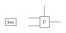

3 Drawing Nodes
A “node” is anything placed at a diagram coordinate that can be an edge endpoint: a labelled box, a logic gate with ports, an invisible route point, or a semantic kind a theme gives its own appearance. All of them are built on the same generic constructors — a theme’s named constructors, like typograph-zx’s z/x/mult, are a thin layer on top, not a separate mechanism.
3.1 Generic constructors
typ.node(x, y, label: none, name: none, style: (:), kind: "node", base-style: (:))The fully general constructor. With neutral defaults it has shapes.empty — no outline, no label box — so it’s useful as an invisible route point for an edge to pass through. Give it a builder in style.shape for one-off visible geometry that doesn’t deserve its own reusable kind.
typ.box(x, y, label: none, fill: auto, stroke: auto, inset: auto, radius: auto, name: none, style: (:))A generic rectangle. fill, stroke, inset, and radius are exposed as direct arguments (the call-site style layer); anything else, including min-size, goes in style:.
typ.gate(x, y, label, legs: (left: 1, right: 1), size: auto, inset: auto, name: none, style: (:), kind: "gate")A labelled, port-capable node. legs holds non-negative integer counts for left, right, top, and bottom; the automatic minimum size grows with the largest leg count on each axis, or supply size: (width, height) to override it directly. kind: controls which theme preset applies — a gate with kind: "measurement" is independently themeable and still port-capable, since port behavior travels as node capability metadata, not as the "gate" kind specifically. Its shape can be a circle, ellipse, rectangle, or polygon; port candidates are projected onto whichever outline is resolved.
typ.port(node, side, index: 0)References one port on a port-capable node. side is "left", "right", "top", or "bottom"; index can also be passed positionally. The exact point is deferred until the node’s measured outline is known, so it doesn’t matter that a gate’s size depends on its label — and a port carries its node with it, so edge(port(g, "left"), ..) draws g even if nothing else references it directly.
gates-ports.typ
// Generates docs/img/gates-ports.svg — a box and a gate with labeled ports.
// typst compile --root . --ignore-system-fonts docs/img/gates-ports.typ docs/img/gates-ports.svg
#import "../../src/lib.typ" as typ
#let diagram = typ.diagram
#set page(width: auto, height: auto, margin: 8pt)
#set text(size: 9pt)
#diagram(scale: 1cm, {
import typ: *
box(0, 0, label: [box])
let g = gate(2.4, 0, $U$, legs: (left: 2, right: 1, top: 1))
for i in range(2) { edge(port(g, "left", i), rel(-0.8, 0)) }
edge(port(g, "right"), rel(0.8, 0))
edge(port(g, "top"), rel(0, 0.8))
})
rel(dx, dy) (an offset from the preceding resolved waypoint) is what makes those leads dead straight regardless of the gate’s label or scale — see Deferred endpoints for why that offset has to be deferred instead of computed up front.
3.2 Reusable node types: node-type()
Most named nodes — z, x, a project’s own process or pentagon — are not written with typ.node directly. They’re declared once with node-type() and then called like any other constructor:
typ.node-type(kind, base-style: (:), flippable: false)This returns a constructor with signature (x, y, label: none, name: none, style: (:)) — or, if flippable: true, that signature gains a top-level flip: auto argument that overwrites style.flip whenever it’s explicitly given. kind must be a string and becomes the node’s semantic kind, which is exactly what a theme’s node-presets dictionary is keyed by. base-style is a factory-level default that sits below the theme preset in the precedence chain (see Core Concepts), so a document can still restyle a reusable kind without touching its constructor:
#let decision = typ.node-type("decision", base-style: (
shape: typ.shapes.diamond,
fill: white,
stroke: 0.6pt + black,
min-size: 14pt,
inset: 3pt,
))flippable: true is worth reaching for whenever a kind’s shape is directional — see Shape Builders for what “directional” means and why flip: earns a dedicated constructor argument instead of always being written into style: by hand.
For constructors that need extra named metadata beyond the ordinary node fields, typ.make-node(kind, x, y, label:, name:, style:, base-style:, size-scale:, ..extra) is the low-level escape hatch node-type itself is built on. Prefer node-type for ordinary semantic kinds; reach for make-node only when a constructor genuinely needs to carry something node-type doesn’t expose.
3.3 Node style keys
The neutral core defaults (typ.node-defaults) are:
(
shape: typ.shapes.empty,
shape-labelled: auto,
fill: none,
stroke: none,
min-width: 0pt,
min-height: 0pt,
inset: 0pt,
radius: 0pt,
rotate: 0deg,
flip: false,
slant: 0.55,
tip: 0.32,
font-size: auto,
)shape— a builder function; see Shape Builders.shape-labelled— an alternate builder used only when a label exists, orautoto always useshape. Opt-in: most kinds keep one builder whether labelled or not, but the bundled spiders switch from a circle to a stadium once they carry a label, so a long label doesn’t get cramped into a fixed circle.fill,stroke— passed straight to the underlying Typst element.min-width,min-height,min-size—min-sizeis shorthand that expands to both axes; within one style dictionary an explicitmin-width/min-heightwins on its axis regardless of write order, while across dictionaries normal precedence applies (a latermin-sizeoverrides both axes from an earlier layer).inset— one length/number or a side dictionary with any ofleft/right/top/bottom/x/y/rest(unknown keys are rejected, not silently treated as zero). A larger inset on one side visually pushes the label toward the opposite side within the fitted outline.radius— uniform corner radius, consumed byrect/square; accepts a length, percentage, or relative length like20% + 1pt, clamped to the maximum sensible rounded radius. Per-corner radii aren’t part of the core outline protocol.rotate,flip,slant,tip— consumed by the builders that need them; see Shape Builders.font-size— per-node override of the label’s type size.
The fields above are type-checked after style resolution, but a node style dictionary otherwise stays open: a custom shape builder can read any extra key it wants out of the resolved style (see Custom shape builders). This is the one deliberate asymmetry with edge styles, which are closed — there’s no per-edge rendering extension point to justify tolerating unknown keys there.
Full precedence, defaults, and every key’s exact contract live in the Node Reference.